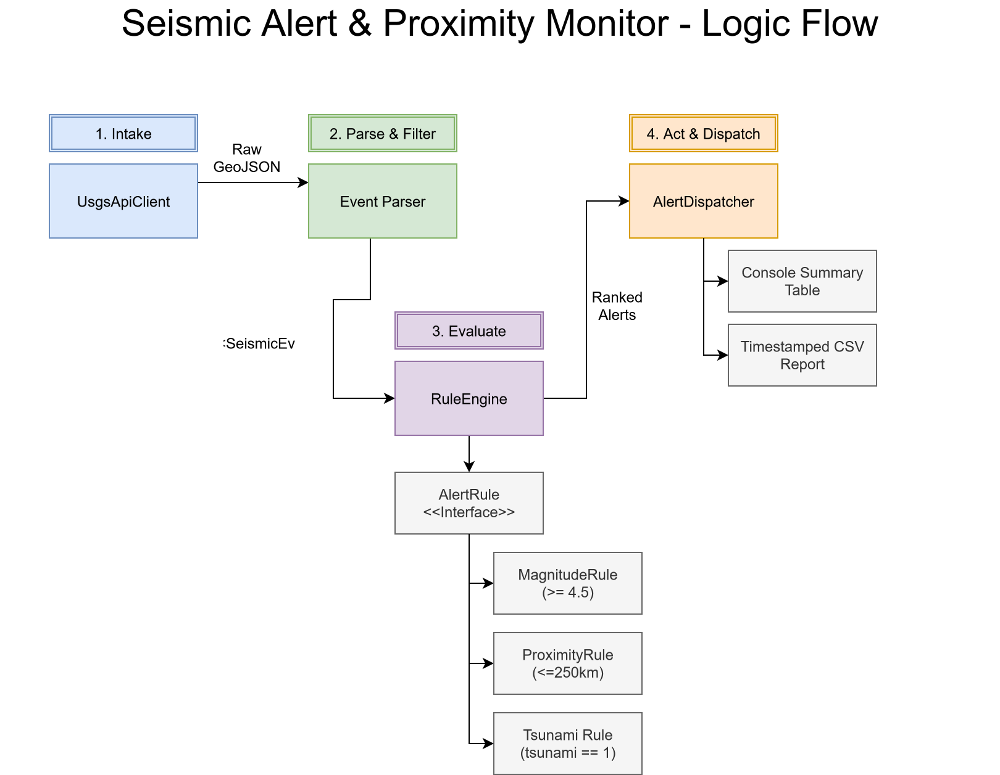

This map is live. It reads the JSON feed that the CI pipeline rebuilds from USGS data every 30 minutes. Click any marker to see the event's magnitude, depth, severity, and the rules it triggered.

Each stage is its own decoupled module with a single responsibility: UsgsApiClient fetches raw GeoJSON, EventParser maps it into immutable domain objects, RuleEngine evaluates every event against the active rules, and AlertDispatcher renders the results to the console, CSV, and the JSON feed behind the map.
MagnitudeRule, ProximityRule (Haversine great-circle distance), and TsunamiRule are each encapsulated behind a shared AlertRule interface. New rules can be added without modifying the core engine.
The system is backed by 41 JUnit 5 unit tests mapped to a formal Requirements Traceability Matrix (RTM). A GitHub Actions workflow
runs mvn test and then refreshes the live JSON feed every 30 minutes.